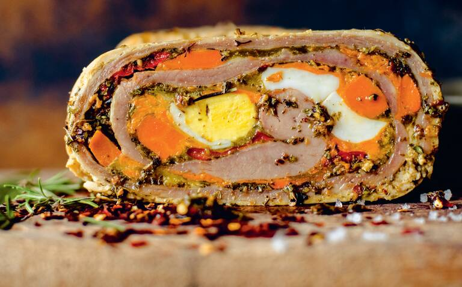

Matambre relleno or matambre arrolado is the Argentinian rolled and stuffed rose meat. The beef is butterflied, filled with diced vegetables and hard-boiled eggs, then rolled and grilled. It is a traditional dish of Argentinian gauchos, cattle ranchers who represent an irreplaceable part of Argentinian culture.
Meal prep time : 50 minutes
Servings : 4